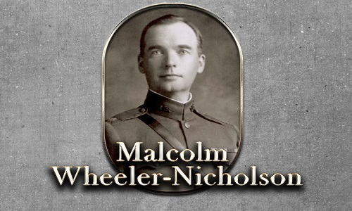
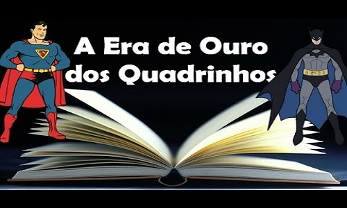

Malcolm Wheeler-Nicholson.
Nascido em 7 de janeiro de 1890 e falecido em 21 de setembro de 1965,
foi um escritor e empresário norte-americano de revistas pulp,
foi pioneiro do gibi americano ao publicar o primeiro periódico contendo
apenas material original ao invés das comumente reimpressões de tiras de jornais.
Muito tempo depois de sua saída da editora de quadrinhos que ele fundou,
a National Allied Publications de Wheeler-Nicholson.
Evoluiria e se transformaria na DC Comics, um das duas maiores
editoras de história em quadrinhos dos Estados Unidos, a outra é a sua grande rival, Marvel Comics.Por escolha dos juízes, o Major Malcolm Wheeler-Nicholson foi incluído em 2008 no Hall da Fama do Eisner Awards, o mais importante prêmio das HQs dos Estados Unidos.

Era de Ouro
A empresa de Wheeler-Nicholson foi a pioneira nos quadrinhos estadunidenses,
publicado regularmente o primeiro material produzido para este formato,
e não reimpressão de tiras de jornal, começando com
More Fun Comics/Fun: The Big Comics Magazine # 01 em fevereiro de 1935,
renomeado para New Fun após o primeiro número.
A empresa também foi a primeira a apresentar super-heróis, começando com
Action Comics # 01 em 1938. Como as vendas do título alcançaram índices
estratosféricos e as pesquisas de marketing confirmaram que o personagem
Superman, foi a principal razão, o período chamado de Era de Ouro dos quadrinhos começou. Como resposta, a companhia introduziu outros personagens que se tornaram populares como Batman, Mulher-Maravilha e o primeiro grupo de super-heróis, a Sociedade da Justiça da América.